First, if you have not already done so, head over to phonegap.com and download PhoneGap Desktop app. After installing it, run the app and create a new blank project. Create a new folder in C:\ and call it PhoneGapProjects. You should now have this new folder: C:\PhoneGapProjects
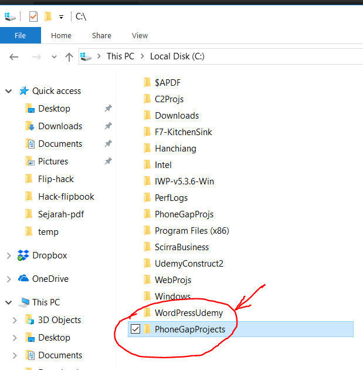
Click on the + button and select 'Create new phonegap project' then click the button 'Next'
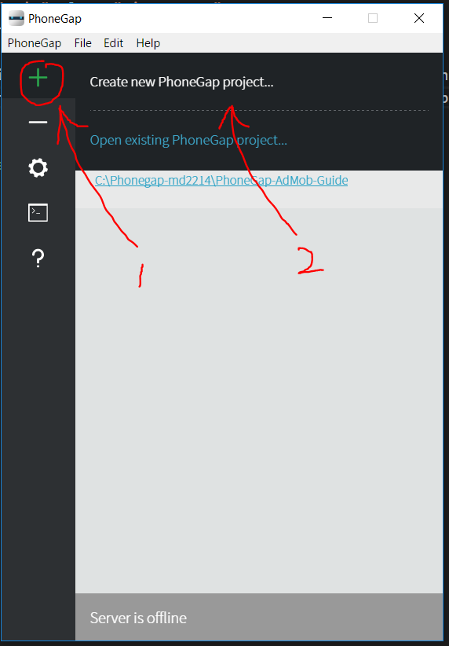
Then, select blank project.
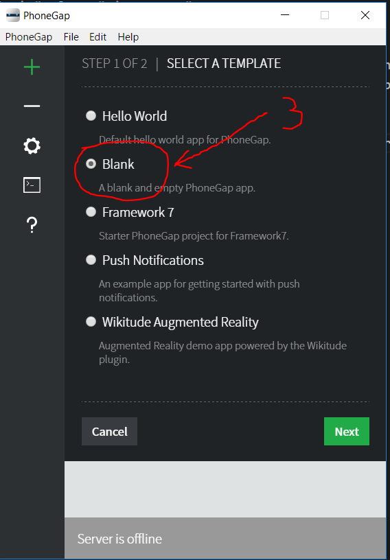
Then, click on button 'Choose...' and select the new folder you created above: C:\PhoneGapProjects. For the 'Name' field, enter 'Test' and for the 'ID'. Then click on the button 'Create project' field, enter 'com.test.app'.
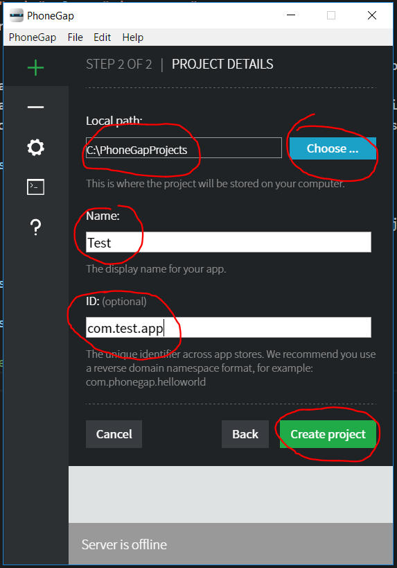
The PhoneGap Desktop App will now create a new project in the C:\PhoneGapProjects folder called Test. After successfully creating the new project, you will it will run the project as is evident from the right arrow in green below. If, for some reason, the project is not running, you can click on the right arrow and start it. If it still fails to start, then, simply close the PhoneGap Desktop App and reopen it. You can also see the 'Local Path' showing 'C:\PhoneGapProjects\Test'. At the bottom, you will see some IP addresses. These are the local IP addresses and port where the project is running. Just click on one of them, eg. in this case, it is: 'http://192.168.1.4:3000' and Chrome Browser will open it.
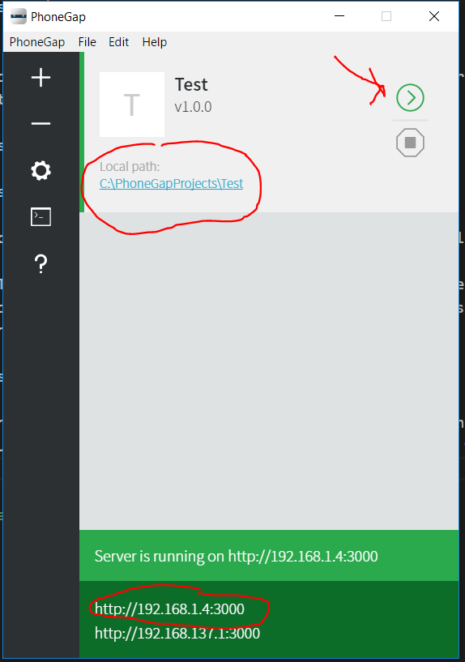Once Chrome browser opens it, you will be able to see a blank screen with the url and port number shown above as 192.168.1.4:3000. This IP may be different on your machine, but the port number will be the same, i.e. port 3000.
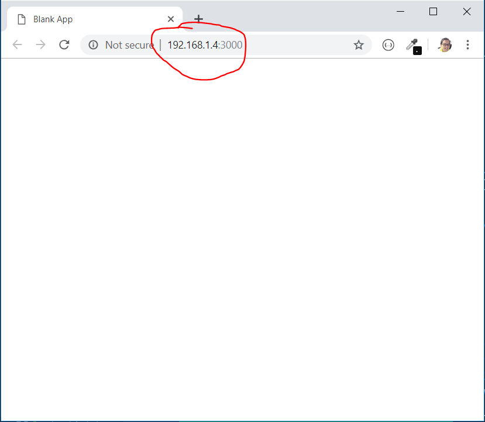
To launch Chrome mobile phone emulator, right click and select 'Inspect'
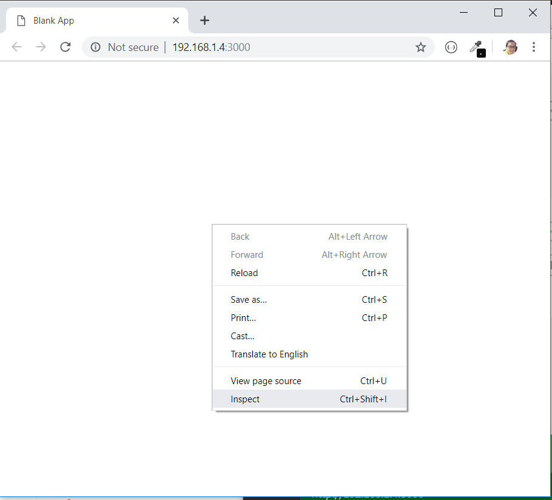
Click on the mobile phone icon to view the page as a mobile phone. You can then select which mobile devices to emulate by clicking the list of mobile devices.
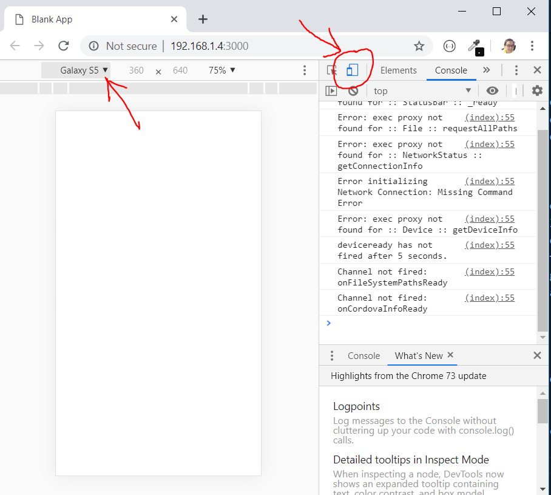
You can also click 'Edit...' to select and add new emulators
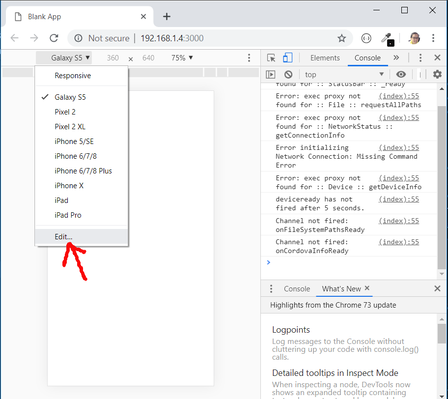
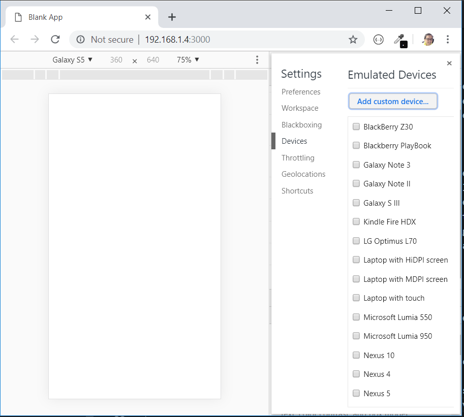
Next, open your favourite text editor. I use Visual Studio Code, which you can download from here: code.visualstudio.com. And add project folder 'C:\PhoneGapProjects' to your workspace.
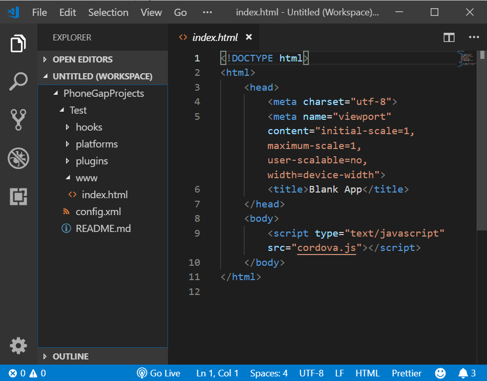
Edit the index.html file to add a 'Hello World' message using H1 tags and save it.
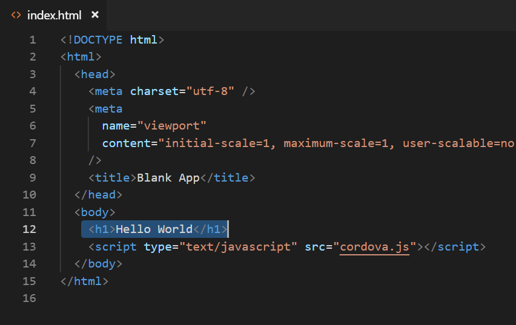
Then, go back to your Chrome device emulator and you will see the message 'Hello World'
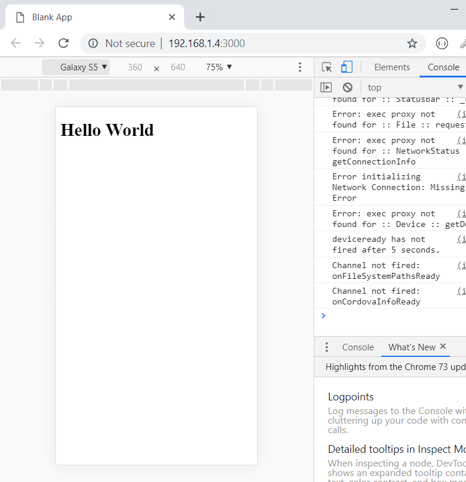
That concludes this lesson. In the next chapter we will add JQuery Mobile libraries to make our page look much better.